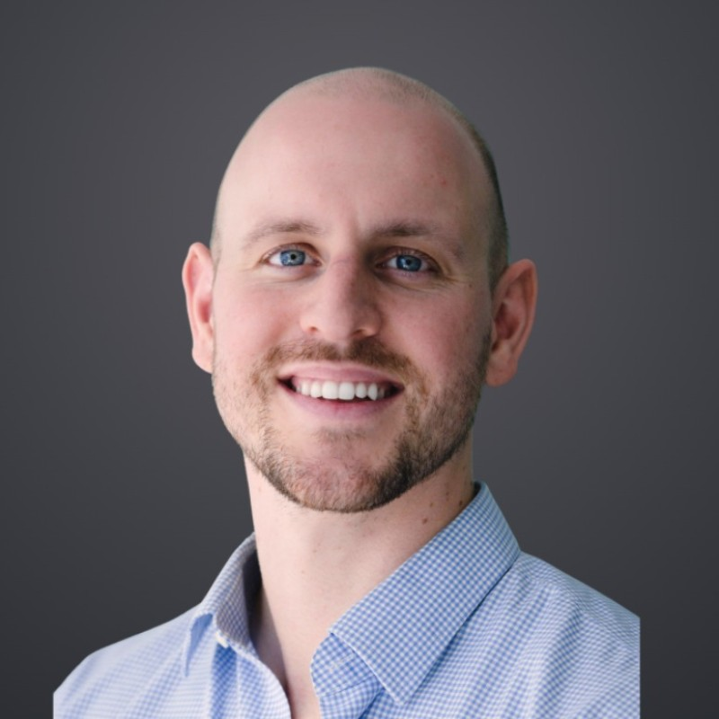

About

Currently in London, raised in San Francisco. Studied at Trinity College & Oxford University.
Email: max.lemerle@gmail.com
I work as an Investment Director at Better Society Capital. Previously I was at the International Sustainability Standards Board and on Oaktree's Special Situations team.
I’m an investor and optimist working on social capitalism - evolving finance to integrate social outcomes and support human flourishing. Fighting to hyperstition a good, human future. Finance is policy by other means.
Current interests
- Social outcomes contracts and impact investment
- "Social capitalism": embedding social outcomes into the core architecture of finance
- Translating UK-style social finance to the US context
Selected prior work
- Contributed to the ISSB's inaugural sustainability standards (IFRS S1 and S2)
- Led nature and biodiversity research workstreams at ISSB
- Deployed >$1bn into distressed/special situations during COVID at Oaktree
- Public service: member of the Bretton Woods Committee; elected City of Los Angeles area-wide director; federal election deputy (San Francisco); co-founded a civic analytics group
If any of this resonates, I'd love to hear from you: LinkedIn